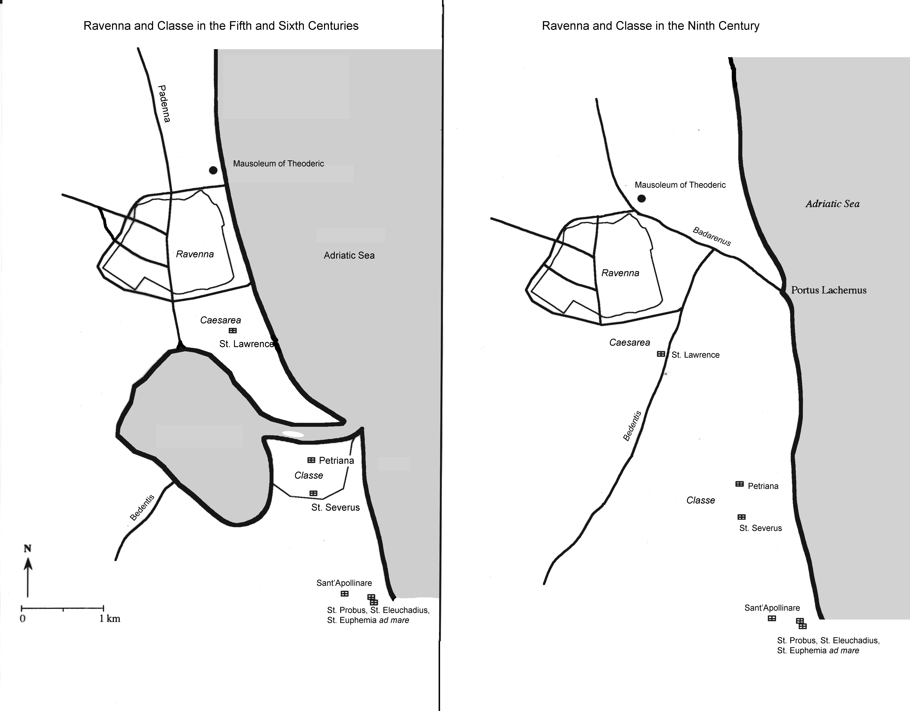
 |
In addition to these "natural" problems, the Byzantines faced political issues also. When the Ostrogoths were removed, other Germanic peoples saw opportunities in Italy; the Franks fought with the Byzantine army on numerous occasions. But in 568, another people, the Lombards, who had been living in the Balkans, invaded Italy suddenly, and captured most of the north and much of the central parts of Italy. They established a kingdom with its capital at Pavia, and spent much of the next 200 years attempting to conquer the sole surviving strip of land that belonged to the empire: Ravenna, Rome, and the corridor between. |
| Ravenna
remained the capital of this territory; the
Byzantine governor, who was titled the exarch, was based in Ravenna and
ruled
from the palace there. One of the most fascinating examples of political propaganda was what happened in the church next to the palace, which had been built and decorated by Theoderic. Something about the decoration of the two lower levels of the walls was unsuitable to the new regime. Whatever was originally there was removed, and new images were inserted in their place: a procession of Orthodox saints. At the western end of the church there were depictions of Ravenna and its palace, and of Classe. Originally these had men standing in front of them; these men were carefully excised and filled with blank wall, but bits of their hands remained visible. Were they originally Ostrogoths? Members of Theoderic's court? We will never know. |
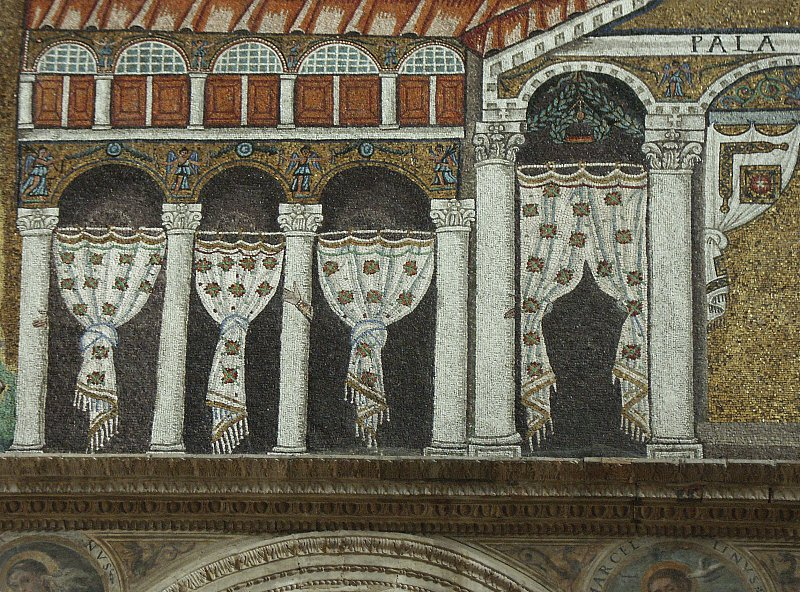 |
The exarchs were always sent from Constantinople, and headed both the military and the civil administration; however, the members of the military and bureaucracy were drawn from the inhabitants of the exarchate, and their interests increasingly diverged from those of Constantinople. In Rome, the Senate disappeared in the late 6th century, and the popes took over many of the administrative functions of the city; they too were increasingly at odds with the imperial government over a whole host of issues.
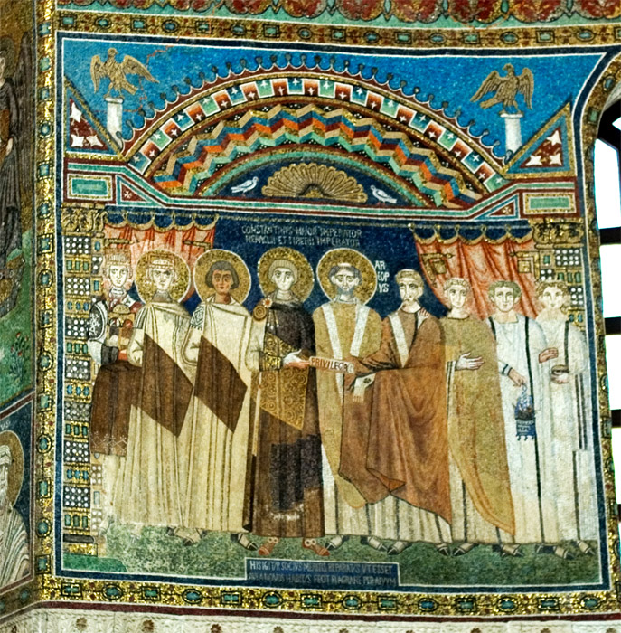 |
The
individuals who gained the most from the Byzantine
occupation were the archbishops of Ravenna, who were second in rank to
the
popes in the Italian church hierarchy.
The holders of this position were often appointed directly
by the
emperor or by the pope, and some of the more ambitious archbishops came
to feel
that Ravenna's church should actually be independent of the authority
of the
pope. The movement culminated
in a decree from the emperor Constans II in 666, stating that Ravenna's
archbishop was to be independent of the pope; needless to say, the
popes
objected strongly, and upon the death of Constans, the next emperor
revoked it. (mosaic in Sant'Apollinare in Classe, set up in the mid-7th century, apparently depicting the emperor and his sons [on the left] giving the privilege of autocephaly to Archbishop Maurus [right of center]) |
| In
order to bolster their claims of ecclesiastical
authority, Ravenna's archbishops embarked upon an astonishing program
of
building, propaganda, and artistic creation. New
dining and audience halls were built in the bishops'
palace. A magnificent ivory throne for the bishops was imported from Constantinople. Histories of the episcopal see were written, that established that Ravenna's first bishop had been St. Apollinaris, a disciple of St. Peter in the 1st century A.D. (Throne of the archbishops, made of ivory plaques over a wooden frame, c. 540's, given to Ravenna by Archbishop Maximian; now in the Museo Arcivescovile, Ravenna) |
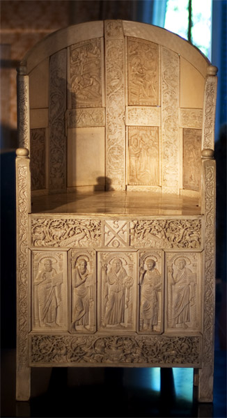 |
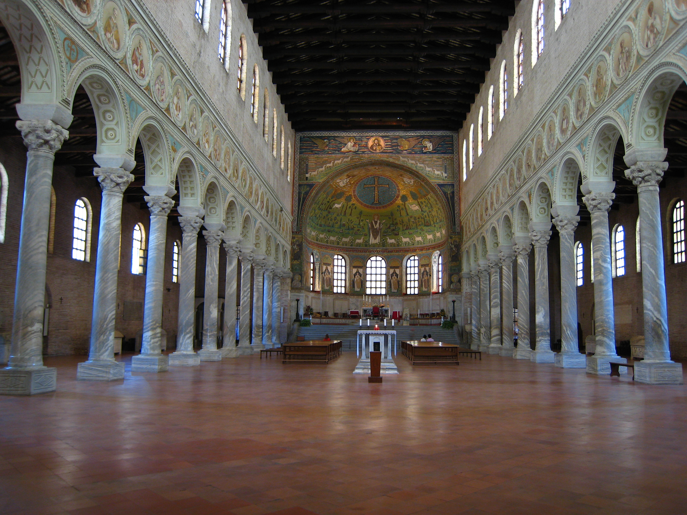 |
A
magnificent church was built on the site of St. Apollinaris' tomb to
the south
of Classe; in the mosaics in the church's apse, Apollinaris is dressed
as an
archbishop and shown as a witness to the Transfiguration of Christ,
while on
the side walls more mosaics show the close relationship between
Ravenna's
archbishops and the emperors. (views of Sant'Apollinare in Classe: view of the nave [left], mosaics of the upper part of the apse [lower left], and mosaics of the lower part of the apse, including four bishops between the windows and St. Apollinaris above them [below]) |
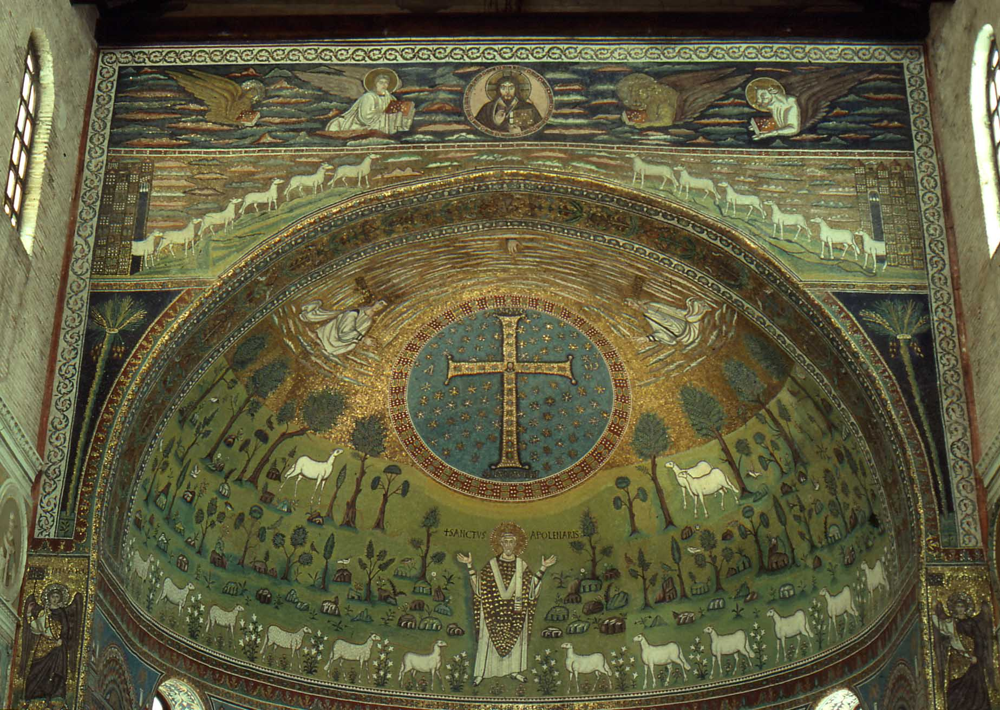 |
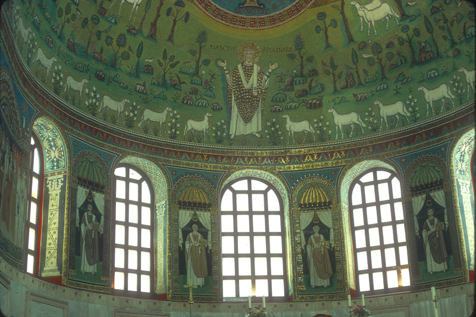 |
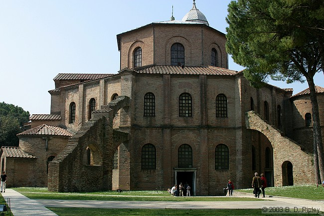 |
The
other great church built at this time celebrated
St. Vitalis. A biography that was
probably written at the same time claims that Vitalis was martyred in
the Roman
period and buried in Ravenna; this again bolstered claims for the
antiquity of
Ravenna's church. The church of
San Vitale was built in a style that was conspiciuously Byzantine,
imitating
recent constructions in Constantinople, and decorated with carved
marble that
was also in a very visually Constantinopolitan style. |
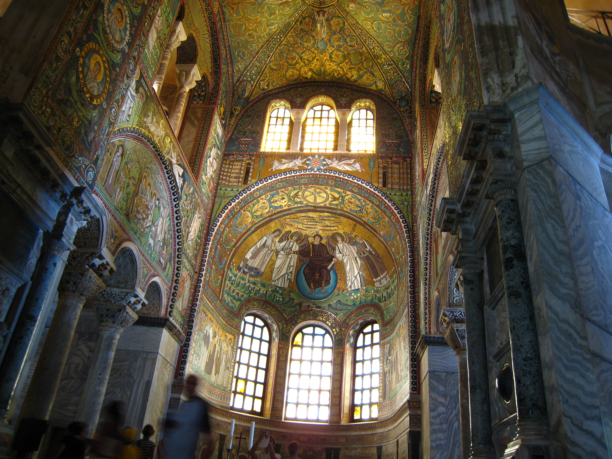 |
In
the apse of the church, mosaics show St. Vitalis and Bishop
Ecclesius, the donor of the church, on either side of Christ. 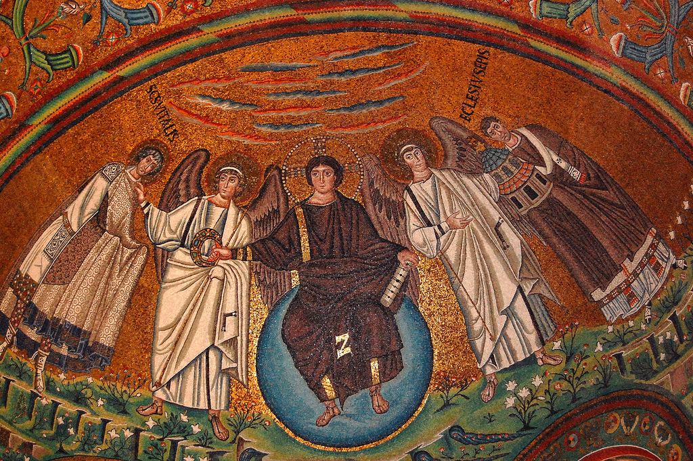 |
On the side walls are the famous
pictures of the emperor Justinian and his empress, Theodora, with their
courts. What is notable about
these pictures is the presence of Archbishop Maximian, who had been
appointed
directly by Justinian, shown right next to the emperor, again
emphasizing the
close connections between the archbishops and the emperors.
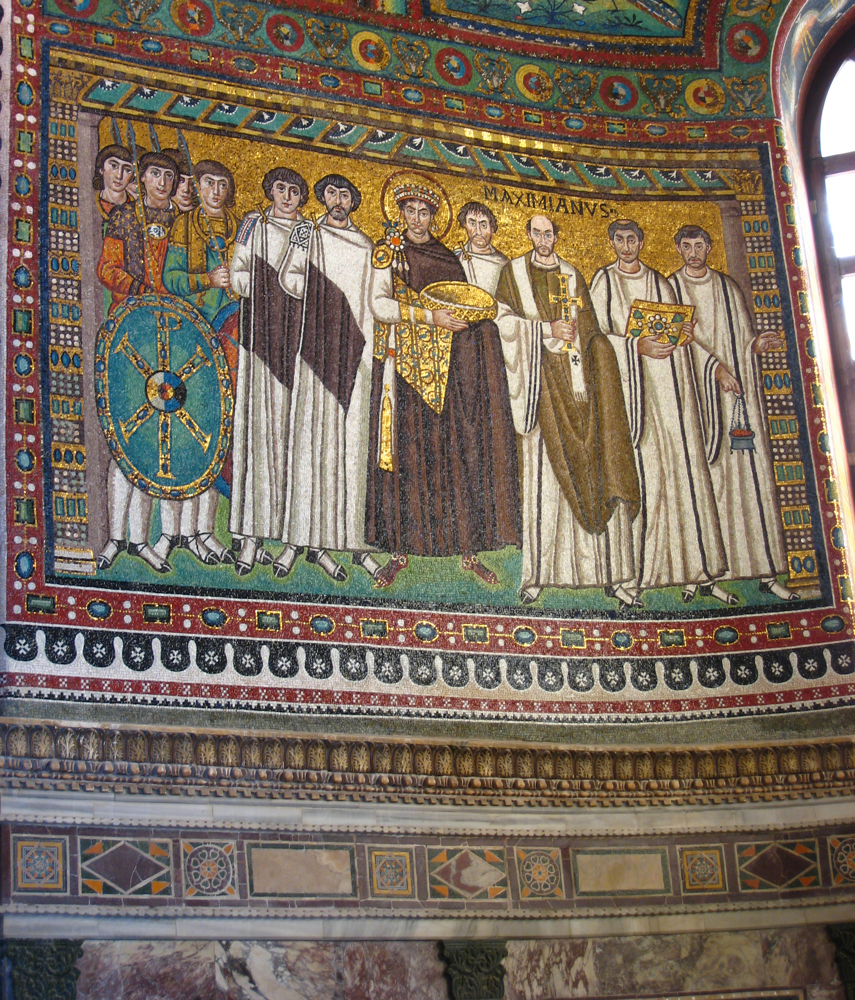 |
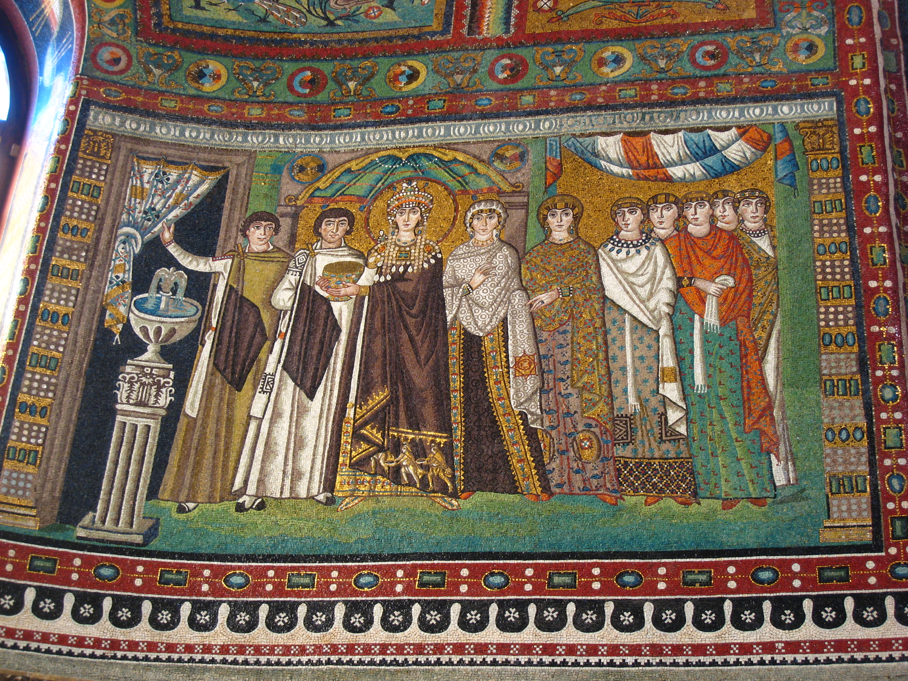 |
Other churches were also built in this period, sponsored by Bishops Ecclesius and Maximian. In particular, in and around Classe more big churches were built in honor of other early bishops of Ravenna, who were now considered to have been saints. Where did all the money come from? Much of it, apparently, was donated by a man called Julian the Banker. No-one knows exactly who he was, but he is credited with having paid enormous sums of money for Sant'Apollinare in Classe, San Vitale, and other churches, whether he was a government official or simply a private banker.
Ravenna and the Exarchate after 600
All of this construction took place before the year 600. After that year, political and economic decline began to overtake Ravenna. After the harbor dried up, the city of Classe lost its raison d'tre. Archaeological evidence shows that by the early eighth century the city of Classe was largely uninhabited, except for areas around some significant churches. When it was conquered and destroyed by the Lombards in 717/8 and the 720's, it may hardly have mattered. Earthquakes ruined some of Ravenna's churches, and the ones in Classe were not rebuilt.
The Lombards kept up the pressure on Ravenna, and the city was briefly captured in 739 and 743; each time the popes interceded with the Lombard king to have the city returned. However, in 751 the Lombard king Aistulf captured the city again, and seems to have intended to make it his capital. The popes asked for help from the Frankish king Pepin, who compelled Aistulf to relinquish the city, but it went not to the Byzantines but to the popes. This was strongly resisted by the archbishops of Ravenna, who wanted to govern the territory themselves, but with Frankish help the popes were able to make good their claim. When the Frankish king Charlemagne conquered the Lombard kingdom in 773, he strongly supported papal rule in central Italy. Ravenna's days as a capital were over.